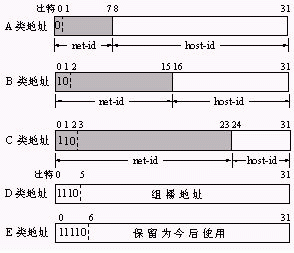
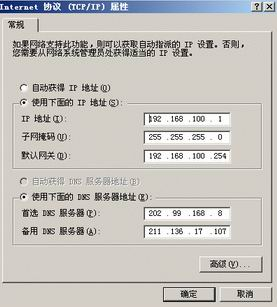

<!DOCTYPE html PUBLIC "-//W3C//DTD XHTML 1.0 Transitional//EN" "http://www.w3.org/TR/xhtml1/DTD/xhtml1-transitional.dtd">
<html xmlns="http://www.w3.org/1999/xhtml">
	<head>
		<title>ip地址分类_ip地址划分_什么叫ip地址_教你如何对ip地址进行分类_ip.liangwei.cc</title>
		<meta http-equiv="Content-Type" content="text/html; charset=utf-8" />
		<meta name="description" content="教你如何对ip地址进行分类、ip地址划分的规则、什么叫ip地址、ip地址与掩码的关系,尽在ip.liangwei.cc" />
		<link href="css/css.css"  media="screen" rel="stylesheet" type="text/css" />
		<meta name="baidu-tc-cerfication" content="64f23803438a0bf1a47dc03687e4c109" />
		<script type="text/javascript" src="js/jquery.js" ></script>
		
</head>
		<script>window._bd_share_config={"common":{"bdSnsKey":{},"bdText":"","bdMini":"2","bdMiniList":false,"bdPic":"","bdStyle":"0","bdSize":"16"},"slide":{"type":"slide","bdImg":"6","bdPos":"right","bdTop":"100"},"image":{"viewList":["qzone","tsina","tqq","renren","weixin"],"viewText":"分享到：","viewSize":"16"},"selectShare":{"bdContainerClass":null,"bdSelectMiniList":["qzone","tsina","tqq","renren","weixin"]}};with(document)0[(getElementsByTagName('head')[0]||body).appendChild(createElement('script')).src='http://bdimg.share.baidu.com/static/api/js/share.js?v=89860593.js?cdnversion='+~(-new Date()/36e5)];</script>
</html>	
	<body>
		<div style="display: none">
			<script type="text/javascript">var cnzz_protocol = (("https:" == document.location.protocol) ? " https://" : " http://");document.write(unescape("%3Cspan id='cnzz_stat_icon_5673692'%3E%3C/span%3E%3Cscript src='" + cnzz_protocol + "s9.cnzz.com/stat.php%3Fid%3D5673692%26show%3Dpic' type='text/javascript'%3E%3C/script%3E"));</script>
			<script type="text/javascript">
			var _bdhmProtocol = (("https:" == document.location.protocol) ? " https://" : " http://");
			document.write(unescape("%3Cscript src='" + _bdhmProtocol + "hm.baidu.com/h.js%3F71827fe26aa9e30dfb1fc430cb44bfd7'			type='text/javascript'%3E%3C/script%3E"));
			</script>
		</div>
		<div style="margin-top:10px;margin-bottom:30px;text-align: right;height:20px;width:85%">
			<font face="微软雅黑" size="3px" ><a style="text-decoration:none" href="network.html" target="_blank" >子网掩码在线计算器</a> |<a style="text-decoration:none" href="listip.html" target="_blank" >你的网站如何获取用户ip及地理位置</a> | <a style="text-decoration:none" href="tijiaoip.html" target="_blank" >IP数据库自助添加</a> | <a style="text-decoration:none" href="contact.html" target="_blank" >联系我们</a> | <a style="text-decoration:none" href="#" >关于我们</a></font>
		</div>
		<div cellpadding="0" cellspacing="0" style="  padding:0; height:200px ">
			<table style=" width: 1000px ; margin:  auto;  ">
				<tr>
					<td valign="top" >
						<div style="margin:30px auto">
							<div align="center" style="margin-bottom:10px;"><font size="3" face="微软雅黑" >常见问题</font>      </div>
							<li><a href="http://ip.liangwei.cc/dian-nao-ip-di-zhi-ru-he-cha-xun.html" target="_blank"><font face="微软雅黑" >电脑ip地址查询</font></a></li>
							<li><a href="http://ip.liangwei.cc/dian-nao-ip-di-zhi-ru-he-cha-xun.html" target="_blank"><font face="微软雅黑" >本地ip地址查询</font></a></li>
							<li><a href=#><font face="微软雅黑" >ip地址怎么设置</font></a></li>
							<li><a href="http://ip.liangwei.cc/ip-di-zhi-fen-lei.html" target="_blank"><font face="微软雅黑" >ip地址分类</font></a></li>
						</div>					
					</td>
					<td valign="top">
						<table width="600px" border="1" align="center" cellpadding="0" cellspacing="0" >
							<form  name="frm" action="ip.php" method="post" >	
								<div style="margin-Bottom:20px"  align="center">
									<font face="微软雅黑" size="4">ip.liangwei.cc <a href="http://ip.liangwei.cc">ip地址查询</a>,查询域名或者ip地址的地址位置</font>	
								</div>
								<tr height="25px" > 
									<th width="240px" ><font face="宋体" size="4px">请输入ip地址或者域名 </font></th>
									<td>
										<input id="ipadd" type="text"  value="请输入您要查询的ip地址或者域名" name="ipdz" size="50" style="width:360px; height:25px;font-size:22px;color:gray;" onBlur="this.value=ignoreSpaces(this.value);"   >								
								  </td>	
								</tr>	
								<tr>
									<td colspan="2" align="center">
										<input id="cx" type="submit" name="sub" value="查询" style="width:60px; height:35px; font-family:楷体; font-size:20px;" >	</td>
								</tr>
							</form>	
						</table>
						<div align="center" style="margin-top:30px">
							<iframe src="http://ip.liangwei.cc/iframe/local.php" rel="nofollow" frameborder="0" scrolling="no" width="100%" height="100%"></iframe>
						</div>
					</td>
					<td valign="top">
						<div  style="margin:30px auto">
							<div align="center" style="margin-bottom:10px;"><font size="3" face="微软雅黑" >友情赞助</font>      </div>
							<!--   <li><strong><a href="http://developer.baidu.com/" target="_blank">感谢BAE对本站的支持</a></strong></li>-->
							<!--<li ><a href="http://sae.sina.com.cn/" target="_blank" ></a></li>-->
						<li ><a href="https://www.tenxcloud.com/" target="_blank">感谢时速云提供docker环境</a></li >
                           <li ><a href="https://github.com/liangwei1988/ip.git" target="_blank">本站支持代码托管于github</a></li >
						</div>
					</td>
				</tr>
			</table>
		</div>
		<table width="750" border="0" align="center" cellpadding="0" cellspacing="0">
			<tr>
			  <td>
					<p align="center" ><font size="5px" face="微软雅黑">ip地址分类及子网掩码的详细介绍</font></p>
					<p align="left" class="dabiaoti" >一、IP地址的介绍</p>
					<p align="left" class="xiaobiaoti" >1、IP地址的表示方法</p>
				<p align="left" ><strong>IP地址 = 网络号+主机号</strong></p>
				<p align="left" class="zhengwen" > 　　把整个Internet网堪称单一的网络，IP地址就是给每个连在Internet网的主机分配一个在全世界范围内唯一的标示符，Internet管理委员会定义了A、B、C、D、E五类地址，在每类地址中，还规定了网络编号和主机编号。在 TCP/IP协议中，IP地址是以二进制数字形式出现的，共32bit，1bit就是二进制中的1位，但这种形式非常不适用于人阅读和记忆。因此Internet管理委员会决定采用一种&quot;点分十进制表示法&quot;表示IP地址：面向用户的文档中，由四段构成的32 比特的IP地址被直观地表示为四个以圆点隔开的十进制整数，其中，每一个整数对应一个字节（8个比特为一个字节称为一段）。A、B、C类最常用，下面加以介绍。本文介绍的都是版本4的IP地址，称为IPv4.</p>
					<p align="center" ><strong></strong></p>
					<p align="left" class="zhengwen" >从上图可以看出：&nbsp;<br />
  　　●A类地址：A类地址的网络标识由第一组8位二进制数表示，A类地址的特点是网络标识的第一位二进制数取值必须为&quot;0&quot;。不难算出，A类地址第一个地址为00000001，最后一个地址是01111111，换算成十进制就是127，其中127留作保留地址，A类地址的第一段范围是：1～126，A类地址允许有2的7次方 -2=126个网段（减2是因为0不用，127留作它用），网络中的主机标识占3组8位二进制数，每个网络允许有2的24次方-2=16777216台主机（减2是因为全0地址为网络地址，全1为广播地址，这两个地址一般不分配给主机）。通常分配给拥有大量主机的网络。</p>
					<p align="left" > 　<span class="zhengwen">　●B类地址：B类地址的网络标识由前两组8位二进制数表示，网络中的主机标识占两组8位二进制数，B类地址的特点是网络标识的前两位二进制数取值必须为&quot;10&quot;。 B类地址第一个地址为10000000，最后一个地址是10111111，换算成十进制B类地址第一段范围就是128～191，B类地址允许有214 =16384个网段，网络中的主机标识占2组8位二进制数，每个网络允许有2的16次方-2=65533台主机，适用于结点比较多的网络。</span></p>
					<p align="left" class="zhengwen" >　　●C类地址：C类地址的网络标识由前3组8位二进制数表示，网络中主机标识占1组8位二进制数C类地址的特点是网络标识的前3位二进制数取值必须为&quot;110&quot;。C类地址第一个地址为11000000，最后一个地址是11011111，换算成十进制C类地址第一段范围就是192～223，C类地址允许有221 =2097152个网段，网络中的主机标识占1组8位二进制数，每个网络允许有28-2= 254台主机，适用于结点比较少的网络。<br />
  　　有些人对范围是2x不太理解，举个简单的例子加以说明。如C类网，每个网络允许有28-2= 254台主机是这样来的。因为C类网的主机位是8位，变化如下: <br />
00000000 <br />
　　00000001 <br />
　　00000010 <br />
　　00000011 <br />
　　　…… <br />
　　11111110 <br />
　　11111111 <br />
　　除去00000000和11111111不用外，从00000001到11111110共有254个变化，也就是28-2个。下图是IP地址的使用范围。</p>
					<table border="1" cellspacing="0" cellpadding="0" width="100%">
                      <tr>
                        <td width="20%"><p align="left">网络类别 </p></td>
                        <td width="20%"><p align="left">最大网络数 </p></td>
                        <td width="20%"><p align="left">第一个可用的网络号 </p></td>
                        <td width="20%"><p align="left">最后一个可用的网络号 </p></td>
                        <td width="20%"><p align="left">每个网络中的最大主机数 </p></td>
                      </tr>
                      <tr>
                        <td width="20%"><p align="left">A </p></td>
                        <td width="20%"><p align="left">126(27-2) </p></td>
                        <td width="20%"><p align="left">1 </p></td>
                        <td width="20%"><p align="left">126 </p></td>
                        <td width="20%"><p align="left">16777214 </p></td>
                      </tr>
                      <tr>
                        <td width="20%"><p align="left">B </p></td>
                        <td width="20%"><p align="left">16384(214) </p></td>
                        <td width="20%"><p align="left">128.0 </p></td>
                        <td width="20%"><p align="left">191.255 </p></td>
                        <td width="20%"><p align="left">65534 </p></td>
                      </tr>
                      <tr>
                        <td width="20%"><p align="left">C </p></td>
                        <td width="20%"><p align="left">2097152(221) </p></td>
                        <td width="20%"><p align="left">192.0.0 </p></td>
                        <td width="20%"><p align="left">223.255.255 </p></td>
                        <td width="20%"><p align="left">254 </p></td>
                      </tr>
                    </table>
					<p><span class="xiaobiaoti">2、几个特殊的IP地址</span><br />
　　<span class="zhengwen">1）私有地址<br />
　　上面提到IP地址在全世界范围内唯一，看到这句话你可能有这样的疑问，像192.168.0.1这样的地址在许多地方都能看到，并不唯一，这是为何？Internet管理委员会规定如下地址段为私有地址，私有地址可以自己组网时用，但不能在Internet网上用，Internet网没有这些地址的路由，有这些地址的计算机要上网必须转换成为合法的IP地址，也称为公网地址，这就像有很多的世界公园，每个公园内都可命名相同的大街，如香榭丽舍大街，但对外我们只能看到公园的地址和真正的香榭丽舍大街。下面是A、B、C类网络中的私有地址段。你自己组网时就可以用这些地址了。</span></p>
					<blockquote>
					  <p class="zhengwen">10.0.0.0～10.255.255.255 <br />
				      172.16.0.0～172.131.255.255 <br />
				      192.168.0.0～192.168.255.255<br />
		        </blockquote>
					    <div align="left"><span class="zhengwen">2）回送地址<br />
					    A类网络地址127是一个保留地址，用于网络软件测试以及本地机进程间通信，叫做回送地址（loopback address）。无论什么程序，一旦使用回送地址发送数据，协议软件立即返回之，不进行任何网络传输。含网络号127的分组不能出现在任何网络上。 </span><br />
					    <span class="zhengwen">【小技巧】<br />
　　●Ping 127.0.0.1,如果反馈信息失败,说明IP协议栈有错,必须重新安装TCP/IP协议。如果成功,ping本机IP地址,如果反馈信息失败,说明你的网卡不能和IP协议栈进行通信。<br />
　　●如果网卡没接网线，用本机的一些服务如Sql Server、IIS等就可以用127.0.0.1这个地址。<br />
　　3）广播地址<br />
　　TCP/IP规定，主机号全为&quot;1&quot;的网络地址用于广播之用，叫做广播地址。所谓广播，指同时向同一子网所有主机发送报文。 <br />
　　4）网络地址<br />
　　TCP/IP协议规定，各位全为&quot;0&quot;的网络号被解释成&quot;本&quot;网络。由上可以看出：<br />
　　（1）含网络号127的分组不能出现在任何网络上；<br />
　　（2）主机和网关不能为该地址广播任何寻径信息。<br />
　　由以上规定可以看出，主机号全&quot;0&quot;全&quot;1&quot;的地址在TCP/IP协议中有特殊含义，一般不能用作一台主机的有效地址。</span><br />
<span class="zhengwen"><strong>3、子网掩码</strong><br />
　　从上面的例子可以看出，子网掩码的作用就是和IP地址与运算后得出网络地址，子网掩码也是32bit，并且是一串1后跟随一串0组成，其中1表示在IP地址中的网络号对应的位数，而0表示在IP地址中主机对应的位数。<br />
　　1）标准子网掩码<br />
　　A类网络（1～126） 缺省子网掩码：255·0·0·0<br />
　　255·0·0·0 换算成二进制为 11111111·00000000·00000000·00000000<br />
　　可以清楚地看出前8位是网络地址，后24位是主机地址，也就是说，如果用的是标准子网掩码，看第一段地址即可看出是不是同一网络的。如21.0.0.0.1和21.240.230.1，第一段为21属于A类，如果用的是默认的子网掩码，那这两个地址就是一个网段的。<br />
　　B类网络（128～191） 缺省子网掩码：255·255·0·0<br />
　　C类网络（192～223） 缺省子网掩码：255·255·255·0<br />
　　B类、C类分析同上。<br />
　　2） 特殊的子网掩码</span><br />
<blockquote>
  <p align="left" class="zhengwen">　　标准子网掩码出现的都是255和0的组合，在实际的应用中还有下面的子网掩码<br />
    <span class="zhengwen">255·128·0·0<br />
      255·192·0·0<br />
      …… <br />
      255·255·192·0<br />
      255·255·240·0<br />
      …… <br />
      255·255·255·248<br />
      255·255·255·252</span></blockquote>
    <span class="zhengwen">　　这些子网掩码又是什么意思呢？这些子网掩码的出现是为了把一个网络划分成多个网络。<br />
    　　还记得上面的例子吗？如下所示：192·168·0·1和192·168·0·200如果是默认掩码255.255.255.0两个地址就是一个网络的，如果掩码变为255.255.255.192这样各地址就不属于一个网络了。下面的子网划分将作详细介绍。 
    </p>
    </span>
    <div align="center" class="zhengwen">
          <table border="0" cellspacing="0" cellpadding="0" width="84%">
            <tr>
              <td width="36%" class="zhengwen"><br />
              192.168.0.1 </td>
              <td width="64%"><p align="left" class="zhengwen">11000000.10101000.00000000.00000001</p></td>
            </tr>
            <tr>
              <td width="36%"><p align="left" class="zhengwen">192.168.0.200</p></td>
              <td width="64%"><p align="left" class="zhengwen">11000000.10101000.00000000.11001000</p></td>
            </tr>
            <tr>
              <td width="36%"><p align="left" class="zhengwen">255.255.255.0</p></td>
              <td width="64%"><p align="left" class="zhengwen">11111111.11111111.11111111.00000000</p></td>
            </tr>
            <tr>
              <td width="36%"><p align="left" class="zhengwen">192.168.0.1</p></td>
              <td width="64%"><p align="left" class="zhengwen">11000000.10101000.00000000.00000001</p></td>
            </tr>
            <tr>
              <td width="36%"><p align="left" class="zhengwen">192.168.0.200</p></td>
              <td width="64%"><p align="left" class="zhengwen">11000000.10101000.00000000.11001000</p></td>
            </tr>
            <tr>
              <td width="36%"><p align="left" class="zhengwen">255.255.255.192</p></td>
              <td width="64%"><p align="left" class="zhengwen">11111111.11111111.11111111.11000000</p></td>
            </tr>
          </table>
					      </div>
					    <p align="left" class="zhengwen">　　&nbsp;下表是几个子网掩码计算过程中非常有用的十进制和二进制的对照 </p>
					    <div align="center">
                          <table border="1" cellspacing="0" cellpadding="0" width="100%">
                            <tr>
                              <td width="100%" colspan="9" class="zhengwen"><br />
                              用于子网掩码换算的十进制和二进制对照 </td>
                            </tr>
                            <tr>
                              <td width="11%" class="zhengwen"><p align="left" class="zhengwen">十进制 </p></td>
                              <td width="11%" class="zhengwen"><p align="left" class="zhengwen">128 </p></td>
                              <td width="11%" class="zhengwen"><p align="left" class="zhengwen">64 </p></td>
                              <td width="11%" class="zhengwen"><p align="left" class="zhengwen">32 </p></td>
                              <td width="11%" class="zhengwen"><p align="left" class="zhengwen">16 </p></td>
                              <td width="11%" class="zhengwen"><p align="left" class="zhengwen">8 </p></td>
                              <td width="11%" class="zhengwen"><p align="left" class="zhengwen">4 </p></td>
                              <td width="11%" class="zhengwen"><p align="left" class="zhengwen">2 </p></td>
                              <td width="12%" class="zhengwen"><p align="left" class="zhengwen">1 </p></td>
                            </tr>
                            <tr>
                              <td width="11%" class="zhengwen"><p align="left" class="zhengwen">二进制 </p></td>
                              <td width="11%" class="zhengwen"><p align="left" class="zhengwen">10000000 </p></td>
                              <td width="11%" class="zhengwen"><p align="left" class="zhengwen">01000000 </p></td>
                              <td width="11%" class="zhengwen"><p align="left" class="zhengwen">00100000 </p></td>
                              <td width="11%" class="zhengwen"><p align="left" class="zhengwen">00010000 </p></td>
                              <td width="11%" class="zhengwen"><p align="left" class="zhengwen">00001000 </p></td>
                              <td width="11%" class="zhengwen"><p align="left" class="zhengwen">00000100 </p></td>
                              <td width="11%" class="zhengwen"><p align="left" class="zhengwen">00000010 </p></td>
                              <td width="12%" class="zhengwen"><p align="left" class="zhengwen">00000001 </p></td>
                            </tr>
                            <tr>
                              <td width="100%" colspan="9" class="zhengwen"><p align="center" class="zhengwen">常用的子网掩码的十进制和二进制对照 </p></td>
                            </tr>
                            <tr>
                              <td width="11%" class="zhengwen"><p align="left" class="zhengwen">十进制 </p></td>
                              <td width="11%" class="zhengwen"><p align="left" class="zhengwen">128 </p></td>
                              <td width="11%" class="zhengwen"><p align="left" class="zhengwen">192 </p></td>
                              <td width="11%" class="zhengwen"><p align="left" class="zhengwen">224 </p></td>
                              <td width="11%" class="zhengwen"><p align="left" class="zhengwen">240 </p></td>
                              <td width="11%" class="zhengwen"><p align="left" class="zhengwen">248 </p></td>
                              <td width="11%" class="zhengwen"><p align="left" class="zhengwen">252</p></td>
                              <td width="11%" class="zhengwen"><p align="left" class="zhengwen">254 </p></td>
                              <td width="12%" class="zhengwen"><p align="left" class="zhengwen">255 </p></td>
                            </tr>
                            <tr>
                              <td width="11%" class="zhengwen"><p align="left" class="zhengwen">二进制 </p></td>
                              <td width="11%" class="zhengwen"><p align="left" class="zhengwen">10000000 </p></td>
                              <td width="11%" class="zhengwen"><p align="left" class="zhengwen">11000000 </p></td>
                              <td width="11%" class="zhengwen"><p align="left" class="zhengwen">11100000 </p></td>
                              <td width="11%" class="zhengwen"><p align="left" class="zhengwen">11110000 </p></td>
                              <td width="11%" class="zhengwen"><p align="left" class="zhengwen">11111000 </p></td>
                              <td width="11%" class="zhengwen"><p align="left" class="zhengwen">11111100</p></td>
                              <td width="11%" class="zhengwen"><p align="left" class="zhengwen">11111110 </p></td>
                              <td width="12%" class="zhengwen"><p align="left" class="zhengwen">11111111 </p></td>
                            </tr>
                          </table>
					      </div>
				    </div>
				    <p align="left" ><strong><span class="dabiaoti">二、彻底明白IP地址的含义</span><br />
                    </strong>　　<span class="zhengwen">不管是学习网络还是上网，IP地址都是出现频率非常高的词。Windows系统中设置IP地址的界面如下图所示，图中</span></p>
				    <p align="center" class="zhengwen" ></p>
				    <p align="left" > <span class="zhengwen"> 　　出现了IP地址、子网掩码、默认网关和DNS服务器这几个需要设置的地方，只有正确设置，网络才能通，那这些名词都是什么意思呢?学习IP地址的相关知识时还会遇到网络地址、广播地址、子网等概念，这些又是什么意思呢？ <br />
				      <br />
                    　　要解答这些问题，先看一个日常生活中的例子。如下图所示，住在北大街的住户要能互相找到对方，必须各自都要有个门牌号，这个门牌号就是各家的地址，门牌号的表示方法为：北大街+XX号。假如1号住户要找6号住户，过程是这样的，1号在大街上喊了一声：&quot;谁是6号，请回答。&quot;，这时北大街的住户都听到了，但只有6号作了回答，这个喊的过程叫&quot;广播&quot;，北大街的所有用户就是他的广播范围，假如北大街共有20个用户，那广播地址就是：北大街 21号。也就是说，北大街的任何一个用户喊一声能让&quot;广播地址-1&quot;个用户听到。 </span></p>
				    <p align="center" class="zhengwen" ><br />
	                </p>
				    <p align="left" class="zhengwen" ><br />
			        　　从这个例中可以抽出下面几个词：<br />
			        　　街道地址：北大街，如果给该大街一个地址则用第一个住户的地址-1，此例为：北大街0号 <br />
			        　　住户的号：如1号、2号等。 <br />
			        　　住户的地址：街道地址+XX号，如北大街 1号、北大街 2号等 <br />
			        　　广播地址：最后一个住户的地址+1，此例为：北大街21号 <br />
			        　　Internet网络中，每个上网的计算机都有一个像上述例子的地址，这个地址就是IP地址，是分配给网络设备的门牌号，为了网络中的计算机能够互相访问，IP地址=网络地址+主机地址，图1中的IP地址是192.168.100.1，这个地址中包含了很多含义。如下所示：<br />
  &nbsp;　网络地址（相当于街道地址）： 192.168.100.0 <br />
			        　　主机地址（相当于各户的门号）： 0.0.0.1 <br />
			        　　IP地址（相当于住户地址）： 网络地址+主机地址=192.168.100.1 <br />
			        　　广播地址：  192.168.100.255 <br />
			        　　这些地址是如何计算出来的呢？为什么计算这些地址呢？要想知道如何，先要明白一个道理，学习网络的目的就是如何让网络中的计算机相互通讯，也就是说要围绕着&quot;通&quot;这个字来学习和理解网络中的概念，而不是只为背几个名词。 <br />
			        注：192.168.100.1是私有地址，是不能直接在Internet网络中应用的，上Internet要转为公有地址，下面详细说明。</p>
				    <p align="left" class="zhengwen" > <br />
		            <span class="xiaobiaoti">1<strong>、为什么要计算网络地址</strong></span></p>
				    <p align="left" class="zhengwen" ><br />
			        　　一句话就是让网络中的计算机能够相互通讯。先看看最简单的网络，下图中是用网线（交叉线）直接将两台计算机连起来。下面是几种IP地址设置，看看在不同设置下网络是通还是不通。 <br />
			        　　1）设置1号机的IP地址为192.168.0.1子网掩码为255.255.255.0，2号机的IP地址为192.168.0.200子网掩码为255.255.255.0，这两台计算机就能正常通讯。 <br />
			        　　2）如果1号机地址不变，将2号机的IP地址改为192.168.1.200子网掩码还是为255.255.255.0，那这两台就无法通讯。 <br />
			        　　3）设置1号机的IP地址为192.168.0.1子网掩码为255.255.255.192，2号机的IP地址为192.168.0.200子网掩码为255.255.255.192，注意和第1种情况的区别在于子网掩码，1为255.255.255.0本例是255.255.255.192这两台计算机就能正常通讯。</p>
				    <p align="center" class="zhengwen" ><br />
				        </p>
				    <p align="left" >&nbsp;</p>
				    <span class="zhengwen"><br />
&nbsp;　　</span><span class="zhengwen">第1种情况能通是因为这两台计算机处在同一网络192.168.0.0，所以能通，而2、3种情况下两台计算机处在不同的网络，所以不通。<br />
　　这里先给个结论：用网线直接连接的计算机或是通过HUB或普通交换机间接的计算机之间要能够相互通，计算机必须要在同一网络，也就是说它们的网络地址必须相同，而且主机地址必须不一样。如果不在一个网络就无法通。这就像我们上面举的例子，同是北大街的住户由于街道名称都是北大街，且各自的门牌号不同，所以能够相互找到对方。 <br />
　　计算网络地址就是判断网络中的计算机在不在同一网络，在就能通，不在就不能通。注意，这里说的在不在同一网络指的是IP地址而不是物理连接。那么如何计算呢？</span><span class="zhengwen"> <br />
　　<strong class="xiaobiaoti">2、如何计算网络地址</strong><br />
　　</span><span class="zhengwen">我们日常生活中的地址如：北大街1号，从字面上就能看出街道地址是北大街，而我们从IP地址中却难以看出网络地址，要计算网络地址，必须借助我们上边提到过的子网掩码。 <br />
　　计算过程是这样的，将IP地址和子网掩码都换算成二进制，然后进行与运算，结果就是网络地址。与运算如下所示，上下对齐，1位1位的算，1与1=1 ，其余组合都为0。</span><span class="zhengwen"><br />
　　　　　　　　　　　　　</span><span class="zhengwen">  　1...0...1...0<br />
　　　　　　　　　　　　　　　　　　1...0...0...0<br />
　　　　　　　　　　　　　　与运算________________　<br />
　　　　　　　　　　　　　　　　　　1...0...0...0</span><span class="zhengwen"> <br />
<br />
　</span><span class="zhengwen">　例如：计算IP地址为：202.99.160.50子网掩码是255.255.255.0的网络地址步骤如下：<br />
　　1）将IP地址和子网掩码分别换算成二进制<br />
　　202.99.160.50 换算成二进制为  11001010·01100011·10100000·00110010<br />
　　255.255.255.0 换算成二进制为  11111111·11111111·11111111·00000000<br />
　　2）将二者进行与运算</span><span class="zhengwen"><br />
　　　　　　　　　　</span><span class="zhengwen">11001010·01100011·10100000·00110010<br />
　　　　　　　　　　　　　11111111·11111111·11111111·00000000<br />
　　　　　　　　　与运算________________________________________<br />
　　　　　　　　　　　　　11001010·01100011·10100000·00000000<br />
<br />
　　3）将运算结果换算成十进制，这就是网络地址。<br />
　　11001010·01100011·10100000·00000000换算成十进制就是202.99.160.0<br />
　　现在我们就可以解答上面三种情况的通与不通的问题了。<br />
　　1、从下面运算结果可以看出二台计算机的网络地址都为192.168.0.0且IP地址不同，所以可以通。<br />
　　　　　　　　　　　192.168.0.1　　　　　　11000000.10101000.00000000.00000001<br />
　　　　　　　　　　　255.255.255.0　　　　　11111111.11111111.11111111.00000000<br />
　　　　　　　与运算______________________________________________________________<br />
　　　　　　　　　　　192.168.0.0　　　　　　11000000.10101000.00000000.00000000<br />
<br />
　　　　　　　　　　　192.168.0.200　　　　　11000000.10101000.00000000.11001000<br />
　　　　　　　　　　　255.255.255.0　　　　　11111111.11111111.11111111.00000000<br />
　　　　　　　与运算______________________________________________________________<br />
　　　　　　　　　　　192.168.0.0　　　　　　11000000.10101000.00000000.00000000<br />
<br />
　　2、从下面运算结果可以看出1号机的网络地址为192.168.0.0，2号机的网络地址为192.168.1.0 不在一个网络，所以不通。<br />
　　　　　　　　　　　192.168.1.200　　　　　11000000.10101000.00000001.11001000<br />
　　　　　　　　　　　255.255.255.0　　　　　11111111.11111111.11111111.00000000<br />
　　　　　　　与运算______________________________________________________________<br />
　　　　　　　　　　　192.168.1.0　　　　　　11000000.10101000.00000001.00000000<br />
<br />
　　3、从下面运算结果可以看出1号机的网络地址为192.168.0.0，2号机的网络地址为192.168.0.192 不在一个网络，所以不通<br />
　　　　　　　　　　　192.168.0.1　　　　　　11000000.10101000.00000000.00000001<br />
　　　　　　　　　　　255.255.255.192　　　　11111111.11111111.11111111.11000000<br />
　　　　　　　与运算______________________________________________________________<br />
　　　　　　　　　　　192.168.0.0　　　　　　11000000.10101000.00000000.00000000<br />
<br />
　　　　　　　　　　　192.168.0.200　　　　　11000000.10101000.00000000.11001000<br />
　　　　　　　　　　　255.255.255.192 　　　  11111111.11111111.11111111.00000000<br />
　　　　　　　与运算______________________________________________________________<br />
　　　　　　　　　　　192.168.0.182　　　　　11000000.10101000.00000000.11000000<br />
<br />
　　相信看到这应该明白了为何计算网络地址和如何计算了，但也许还有很多疑问，如IP地址为什么写成这样，子网掩码到底是怎么回事等等，别急，下面慢慢介绍。</span><br />
<p><span class="dabiaoti"><strong>三、计算相关地址—通过IP地址和子网掩码与运算计算相关地址</strong></span><strong><br />
  </strong>　　<span class="zhengwen">知道IP地址和子网掩码后可以算出：<br />
  ●网络地址<br />
  ● 广播地址<br />
  ● 地址范围<br />
  ● 本网有几台主机<br />
  【例1】下面例子IP地址为192·168·100·5 子网掩码是255·255·255·0。算出网络地址、广播地址、地址范围、主机数。</span><br />
  <strong>　　</strong><span class="xiaobiaoti"><strong>1、分步骤计算</strong></span><strong><br />
  </strong>　<span class="zhengwen">　1）将IP地址和子网掩码换算为二进制，子网掩码连续全1的是网络地址，后面的是主机地址。 虚线前为网络地址，虚线后为主机地址<br />
  192.168.100.5　　　　　11000000.10101000.01100100.00000101<br />
  255.255.255.0　　　　　11111111.11111111.11111111.00000000<br />
  <br />
  2）IP地址和子网掩码进行与运算，结果是网络地址<br />
  192.168.100.5　　　　　11000000.10101000.01100100.00000101<br />
  255.255.255.0　　　　　11111111.11111111.11111111.00000000<br />
  与运算______________________________________________________________<br />
  结果为：　192.168.100.0　　　　　11000000.10101000.01100100.00000000<br />
  <br />
  3） 将上面的网络地址中的网络地址部分不变，主机地址变为全1，结果就是广播地址。<br />
  网络地址为：　192.168.100.0　　　　　11000000.10101000.01100100.00000000<br />
  ___________________________________________________________________________<br />
  将主机地址变为全1　<br />
  广播地址为：　192.168.100.255　　　　11000000.10101000.01100100.11111111 <br />
  4） 地址范围就是含在本网段内的所有主机<br />
  网络地址+1即为第一个主机地址，广播地址-1即为最后一个主机地址，由此可以看出<br />
  地址范围是： 网络地址+1 至 广播地址-1<br />
  本例的网络范围是：192·168·100·1  至  192·168·100·254<br />
  也就是说下面的地址都是一个网段的。<br />
  192·168·100·1、192·168·100·2 ... 192·168·100·20 ... 192·168·100·111...  192·168·100·254&nbsp;<br />
  5） 主机的数量<br />
  主机的数量=2二进制的主机位数-2<br />
  减2是因为主机不包括网络地址和广播地址。本例二进制的主机位数是8位。<br />
  主机的数量=28-2=254</span><br />
  <strong>　　</strong><span class="xiaobiaoti"><strong>2、总体计算</strong></span><strong><br />
  </strong>　　<span class="zhengwen">我们把上边的例子合起来计算一下过程如下：<br />
  192.168.100.5　　　　　11000000.10101000.01100100.00000101<br />
  255.255.255.0　　　　　11111111.11111111.11111111.00000000<br />
  <br />
  2）IP地址和子网掩码进行与运算，结果是网络地址<br />
  192.168.100.5　　　　　11000000.10101000.01100100.00000101<br />
  255.255.255.0　　　　　11111111.11111111.11111111.00000000<br />
  与运算　　　______________________________________________________________<br />
  结果为网络地址：192.168.100.0　　　　　11000000.10101000.01100100.00000000<br />
  ___________________________________________________________________________<br />
  <br />
  将结果中的网络地址部分不变，主机地址变为全1<br />
  结果为广播地址：192.168.100.0　　　　　11000000.10101000.01100100.11111111 <br />
  主机的数量：　　　　　　　　　　　　　　　　　　　　　　　　　　　28-2=254<br />
  地址范围是：　　　网络地址：　192.168.100.0　...... 广播地址为：　192.168.100.255<br />
  主机的地址范围是：网络地址+1：192.168.100.1　...... 广播地址为：　192.168.100.254 <br />
  <br />
  【例2】IP地址为128·36·199·3 子网掩码是255·255·240·0。算出网络地址、广播地址、地址范围、主机数。<br />
  1） 将IP地址和子网掩码换算为二进制，子网掩码连续全1的是网络地址，后面的是主机地址， 虚线前为网络地址，虚线后为主机地址<br />
  128.36.199.3&nbsp;&nbsp;&nbsp;&nbsp;&nbsp;&nbsp;&nbsp;&nbsp;&nbsp;&nbsp; 10000000.00100100.1100&nbsp;0111.00000011<br />
  255.255.240.0&nbsp;&nbsp;&nbsp;&nbsp;&nbsp;&nbsp;&nbsp;&nbsp;&nbsp;&nbsp;11111111.11111111.1111&nbsp;0000.00000000<br />
  2）IP地址和子网掩码进行与运算，结果是网络地址<br />
  128.36.199.3&nbsp;&nbsp;　　　　　　　　 10000000.00100100.1100&nbsp;0111.00000011<br />
  255.255.240.0　　　　　　　　　　11111111.11111111.1111&nbsp;0000.00000000<br />
  与运算　　　______________________________________________________________<br />
  结果为网络地址：128.36.192.0　　　10000000.00100100.1100&nbsp;0000.00000000<br />
  <br />
  3）将运算结果中的网络地址不变，主机地址变为1，结果就是广播地址。<br />
  128.36.192.0　　　10000000.00100100.1100&nbsp;0000.00000000<br />
  ______________________________________________________________<br />
  广播地址：　128.36.207.255&nbsp;&nbsp;&nbsp;&nbsp;&nbsp;&nbsp;&nbsp;&nbsp;10000000.00100100.1100&nbsp;1111.11111111 <br />
  4） 地址范围就是含在本网段内的所有主机<br />
  网络地址+1即为第一个主机地址，广播地址-1即为最后一个主机地址，由此可以看出<br />
  本例的网络范围是：128.36.192.1&nbsp;&nbsp;&nbsp;至&nbsp;&nbsp;&nbsp;&nbsp;128.36.207.254<br />
  5） 主机的数量<br />
  主机的数量=2二进制位数的主机-2=212-2=4094<br />
  从上面两个例子可以看出不管子网掩码是标准的还是特殊的，计算网络地址、广播地址、地址数时只要把地址换算成二进制，然后从子网掩码处分清楚连续1以前的是网络地址，后是主机地址进行相应计算即可。 </span></p>
<p class="zhengwen">1.IP地址基础知识。 <br />
  在Internet上有千百万台主机，为了区分这些主机，人们给每台主机都分配了一个专门的地址，称为IP地址。通过IP地址就可以访问到每一台主机。IP地址由4部分数字组成，每部分数字对应于8位二进制数字，各部分之间用小数点分开。如某一台主机的IP地址为：211.152.65.112 ，Internet IP地址由NIC（Internet Network Information Center）统一负责全球地址的规划、管理；同时由Inter NIC、APNIC、RIPE三大网络信息中心具体负责美国及其它地区的IP地址分配。 </p>
<p class="zhengwen">固定IP：固定IP地址是长期固定分配给一台计算机使用的IP地址，一般是特殊的服务器才拥有固定IP地址。 </p>
<p class="zhengwen">动态IP：因为IP地址资源非常短缺，通过电话拨号上网或普通宽带上网用户一般不具备固定IP地址，而是由ISP动态分配暂时的一个IP地址。普通人一般不需要去了解动态IP地址，这些都是计算机系统自动完成的。 </p>
<p class="zhengwen">公有地址（Public address）由Inter  NIC（Internet Network Information Center 因特网信息中心）负责。这些IP地址分配给注册并向Inter NIC提出申请的组织机构。通过它直接访问因特网。</p>
<p class="zhengwen"> 私有地址（Private address）属于非注册地址，专门为组织机构内部使用。 </p>
<p class="zhengwen">以下列出留用的内部私有地址 <br />
  A类 10.0.0.0--10.255.255.255 <br />
  B类 172.16.0.0--172.31.255.255 <br />
  C类 192.168.0.0--192.168.255.255 </p>
<p class="zhengwen">2.IP地址是由什么机构分配的? <br />
  所有的IP地址都由国际组织NIC（Network Information Center）负责统一分配，目前全世界共有三个这样的网络信息中心。 </p>
<p class="zhengwen">InterNIC：负责美国及其他地区； <br />
  ENIC：负责欧洲地区； <br />
  APNIC：负责亚太地区。 <br />
  我国申请IP地址要通过APNIC，APNIC的总部设在日本东京大学。申请时要考虑申请哪一类的IP地址，然后向国内的代理机构提出。 </p>
<p class="zhengwen"><span class="xiaobiaoti">3.什么是公有地址和私有地址? </span><br />
  公有地址（Public address）由Inter  NIC（Internet Network Information Center 因特网信息中心）负责。这些IP地址分配给注册并向Inter NIC提出申请的组织机构。通过它直接访问因特网。</p>
<p class="zhengwen"> 私有地址（Private address）属于非注册地址，专门为组织机构内部使用。 </p>
<p class="zhengwen">以下列出留用的内部私有地址 <br />
  A类 10.0.0.0--10.255.255.255 <br />
  B类 172.16.0.0--172.31.255.255 <br />
  C类 192.168.0.0--192.168.255.255</p>
<br />
<p align="left" ><br />
                                              </p>
</strong></p></td>
		  </tr>
        </table>
		<table border="0"  align="center" style="margin:30px auto; width:500px" top="10">
			
			<tr align="center">
				<td>
					<font color="#000" face="微软雅黑" >
						Copyrigh &copy;2013 - 2014       liangwei.cc 版权所有					</font>				</td>
			</tr>
			<tr align="center">
				<td>
					<font color="#000" face="微软雅黑" >
						如有问题请联系我 E-Mail：liangwei@liangwei.cc       技术支持：<a href="http://www.liangwei.cc" target="_blank">梁伟</a>					</font>				</td>
			</tr>
		</table>
		<script type="text/javascript" src="js/input.js" ></script>
	</body>	
</html>

